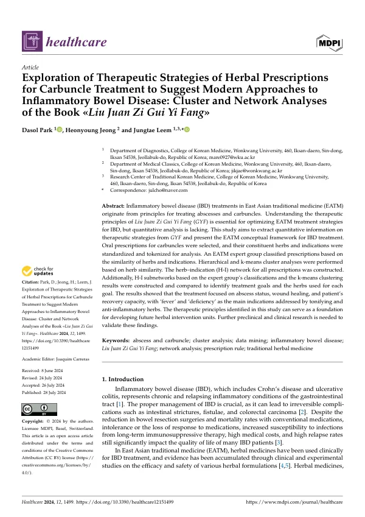

Exploration of Therapeutic Strategies of Herbal Prescriptions for Carbuncle Treatment to Suggest Modern Approaches to Inflammatory Bowel Disease: Cluster and Network Analyses of the Book Liu Juan Zi Gui Yi Fang
Park D, Jeong H, Leem J
Healthcare 12(15):1499

첫 장 · 오픈액세스First page · open access
논문 소개Summary
염증성 장질환은 크론병과 궤양성 대장염을 아우르는 만성 재발성 질환으로, 제대로 관리하지 못하면 장협착과 누공, 대장암 같은 되돌릴 수 없는 합병증으로 갑니다. 동아시아 전통의학에서 이 병을 다루는 원리는 종기와 옹저를 다스리던 원칙에서 왔습니다. 그 뿌리에 현존하는 가장 오래된 외과 전문서인 유연자귀유방이 있는데, 지금도 임상에서 쓰이면서 정량적으로 정리된 적은 없었습니다. 이 연구는 그 책에서 치료 전략을 수치로 뽑아내려 했습니다.
2014년 판본에서 옹저와 관련 증상을 적응증으로 적은 경구 처방 43개를 골랐습니다. 약재 이름은 한국한의학연구원 자료와 중국약전에 맞추어 표준화했고, 적응증은 경력 15년이 넘는 전문가 세 명이 합의해 의미 단위로 쪼갰습니다. 각 처방을 약재 유무의 벡터로 바꾸어 군집분석을 돌리고 약재와 적응증을 잇는 연결망을 그렸습니다. 사람이 나눈 묶음과 기계가 나눈 묶음을 견주는 것이 이 설계의 핵심입니다.
전문가는 설사 치료, 옹저 치료, 대황이 든 처방, 보익 처방의 네 갈래로 나누었고 계층적 군집분석도 거의 같은 결과를 냈습니다. 다른 점은 전문가가 따로 둔 설사와 옹저 처방을 기계가 한 덩어리로 묶고, 대황이 든 처방 둘을 보익 약재 비중 때문에 보익 쪽으로 보냈다는 것입니다. k-평균 분석에서는 군집을 여섯으로 둘 때 오분류율이 0.22퍼센트로 가장 낮았습니다.
연결망에서 드러난 것은 이 책의 치료가 세 가지를 본다는 점입니다. 종기가 어느 단계에 있는가, 상처가 얼마나 아물었는가, 환자에게 회복할 힘이 남아 있는가입니다. 적응증 가운데 가장 크게 나온 것은 열과 허였고, 인삼과 황기 같은 보익 약재를 중심에 두고 염증을 삭이는 약재를 보조로 얹었습니다. 대변과 소변 상태, 발열, 소화기 기능도 처방을 가르는 기준이었습니다. 면역억제로 접근하는 현대 치료와 견주면 회복할 힘을 함께 본다는 점이 다릅니다.
이 연구가 내놓은 것은 가설이지 검증이 아닙니다. 등장 빈도를 중요도의 지표로 삼았으므로 대황처럼 드물게 나오지만 특정 처방에서 결정적인 약재를 낮게 볼 위험이 있고, 자료가 작고 밀도가 고르지 않아 k-평균 분석에 오류가 생길 수 있어 민감도 분석으로 확인했습니다. 용량은 단위를 표준화할 수 없어 아예 제외했는데 효과를 가르는 중요한 변수일 수 있습니다. 무엇보다 이 책은 특정 시대의 임상 지식이라 현대의 지식을 대신하지 못합니다. 전임상과 임상 연구로 확인해야 합니다.
Inflammatory bowel disease, comprising Crohn's disease and ulcerative colitis, is a chronic relapsing condition that leads to irreversible complications such as intestinal strictures, fistulae and colorectal carcinoma if poorly managed. In East Asian traditional medicine, the principles for treating it derive from those for treating abscesses and carbuncles. At the root of those principles lies Liu Juan Zi Gui Yi Fang, the earliest surviving specialist surgical text — still drawn on in practice, yet never set out quantitatively. This study set out to extract its therapeutic strategies as numbers.
From the 2014 edition, 43 oral prescriptions listing carbuncles and related symptoms among their indications were selected. Herb names were standardised against the Korea Institute of Oriental Medicine's reference and the 2015 Chinese Pharmacopoeia, while the indications were divided into semantic units and standardised by consensus among three experts with more than fifteen years of clinical and research experience. Each prescription was converted into a vector scoring 1 where a herb was present and 0 where absent, then subjected to hierarchical and k-means cluster analysis, with a network linking herbs to indications. Setting the human classification alongside the machine's is the heart of the design.
The experts sorted the prescriptions into four groups — diarrhoea treatment, abscess treatment, Da huang-containing, and tonifying — and the hierarchical analysis returned almost the same result. It differed in merging the separately kept diarrhoea and abscess groups into one, and in assigning two Da huang-containing prescriptions to the tonifying group, on account of their high proportion of tonifying herbs. In the k-means analysis, six clusters gave the lowest misclassification rate at 0.22 percent.
What the network revealed is that this text's treatment attends to three things: the stage of the abscess, the degree of wound healing, and the patient's remaining capacity to recover. The largest indications were fever and deficiency, met by tonifying herbs such as ginseng and astragalus at the centre with anti-inflammatory herbs added as adjuvants. Stool and urine condition, fever, dehydration and digestive function also determined the choice of prescription. Set against modern immunosuppressive strategies, the attention paid to the patient's healing capacity stands out as the distinguishing idea.
What this study produces is a hypothesis, not a validation, and the authors record several limits. Treating frequency of appearance as a proxy for importance risks undervaluing a herb such as Da huang, which appears rarely but may be decisive within particular prescriptions. The dataset is small and unevenly dense, so the k-means algorithm could err; sensitivity analysis was run to check this. Dosage was excluded outright because its units could not be standardised across the text, though dosage may well be a critical effect modifier. Above all, these strategies are the clinical knowledge of a particular era and do not stand in for modern knowledge. Preclinical and clinical research is needed to confirm them.
인용Cite
Park D, Jeong H, Leem J. Exploration of Therapeutic Strategies of Herbal Prescriptions for Carbuncle Treatment to Suggest Modern Approaches to Inflammatory Bowel Disease: Cluster and Network Analyses of the Book Liu Juan Zi Gui Yi Fang. Healthcare. 2024;12(15):1499. doi:10.3390/healthcare12151499